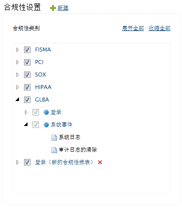

合规性管理
在EventLog Analyzer中，可以为新的合规性动作创建报表，您可以自定义或删除已有的合规性报表。
怎样添加一个新的合规性报表？
在EventLog Analyzer中添加新的合规性报表，可以通过以下菜单实现。
要添加新的自定义合规性报表，请参阅创建新的合规性报表部分。
怎样编辑、删除一个自定义合规性报表？
在EventLog Analyzer中编辑或删除合规性报表，可以通过以下菜单实现。

-
& 2. 展开并选择合规性报表和子报表，根据需求修改缺省的和自定义的合规性报表。
-
使用X图标可以删除自定义合规性报表，需要注意的是，您只能删除自定义合规性报表，缺省的合规性报表只能通过编辑进行修改。
-
使用展开全部或收缩全部链接，可以展开或收缩合规性报表以及子报表，方便进行选择和取消选择。
点击保存完成编辑/删除合规性报表操作。 |